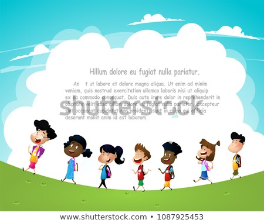

These are the reflections I have done so far
Reflection-06/11/19
“By demonstrating that all peoples cry, laugh, eat, worry, and die, it can introduce the idea that if we try and understand each other, we may even become friends” - Maya Angelou
I think that this quote talks about how if people would think about each others similarities and not their differences. It gives the idea that people can be friends when they look at what they have in common instead of looking at how others are different. This is also could be used as an example of our community and society because of how all mainstream media and music only talks about money, guns, and drugs instead of talking about more positive topics and trying to get everyone to work together towards advancement.

Reflection-06/13/19
“If you look at the people in your circle and dont get inspired, then you don’t have a circle. You have a cage.” - Nipsey Hussle
To me this quote means that if your “friends” are not motivating you to do good for yourself, they are probably not your real “friends”. It means that it is best if you hang out with friends that are inspired and inspire you. Hanging out with friends that do not inspire you may lead you to going in the wrong direction in life.

Reflection-06/14/19
When brothers fight to the death, a stranger inherits their property
To me, this quote means that if you and a brother fight, then someone will come in and take what you own. If you fight with your brother instead of working together, you will both eventually lose because someone will come in and take what you two are fighting over.
Reflection-06/17/19
“If the Negro in the ghetto must eternally be fed by the hand that pushes him into the ghetto, he will never become strong enough to get out the ghetto” - Carter G. Woodson
To me, I think that this quote means that if you keep on having everything given to you, you will not be strong enough to get it yourself. If you expect something to be given to you, you won’t go try to do anything yourself. Then if something happens and you aren’t able to receive those things anymore, you will not know how to go out and get it for yourself
Reflection-06/18/19
“Never forget that intelligence rules the world and ignorance carries the burden. Therefore, removing yourself as far as possible from ignorance and seek as far as possible to be intelligent” - Marcus Garvey
I think that this quote means that you should always strive for intelligence and ignore the ignorance in the world. If you are intelligent, you can help others gain knowledge. If you are always ignorant, you aren’t helping as much as intelligence
Reflection-06/19/19
“A people without the knowledge of their past history, origin and culture is like a tree without roots” - Marcus Garvey
To me, this quote means that if you don’t know about your history, it’s similar to a tree without roots. He could mean you arent connected to your family tree’s roots. All in all, I think he means that if you don’t know your history, its like you aren’t connected to your family

Reflection-06/20/19
“It is better to be prepared for an opportunity and not have one than to have an opportunity and not be prepared” - Whitney M. Young
To me, this quote means that you are better of always being prepared and nothing happen instead of never being prepared then something important happens. It is better to always be prepared then never be prepared.
Reflection-06/24/19
“I prefer to be true to myself, even at the hazard of incurring the ridicule of others, rather than to be false and to incur my own abhorrence” - Fredrick Douglas
To me, this quote means that you should not change yourself for the satisfaction of others. It means that he would rather be himself with the risk of not being liked instead of changing himself for others. This relates to the term allies, because your allies would prefer if you were being yourself and your allies would be themselves too.
Reflection-06/25/19
“If you can control a man’s thinking you do not have to worry about his action. When you determine what a man shall think you do not have to concern yourself about what he will do. If you make a man feel that he is inferior, you do not have to compel him to accept an inferior status, for he will seek it himself. If you make a man think that he is justly outcast, you do not have to order him to the back. He will go without being told; and if there is no back door, his very nature will demand one" Carter G. Woodson
To me, this quote means that if someone tells someone what they are and how they should be, that is how they are always going to be. If someone tells another what their limits are and not let them try and pass them, they will continue their life not wanting to get past their limits. A person should not let others define what they can and cannot do.
Reflection-06/26/19
Building a brotherhood through community norms
Community Norms are useful in the community. It helps set boundaries on what the people of the community can and cannot do. Writing down the community norms of your community can help make a difference and possibly stop things from happening in your community.
Reflection-06/27/19
“If you want to go quickly, go by yourself. If you want to go far, go together.” - African Proverb
To me, this quote means that if you want to just finish the task, you can just do it by yourself and quickly. But, if you want to accomplish something big with your task, you should work with some partners so that you can finish the task at high quality. You should work with a team to accomplish something bigger instead of finishing something by yourself so it's quicker. Two heads are better than one.
Reflection-07/02/19
How I feel about HGP
I think that the HGP is really good so far. It is providing me more opportunities than I could get without it. I want to try to get the most out of my time in this program so that I can get further in my career
Reflection-07/03/19
What does it mean to be a man?
I think being a man means that you provide for you, your family, and your friends. It means that you can take responsibility of yourself and others. It means that you can help and protect the ones you love. All in all, a man is a person who is able to take charge, able to help others in all ways, and protect others from harm.
Reflection-07/08/19
Gaming
To me, I think that gaming isn’t always bad, but it can turn into something bad. Gaming for some can be a source to get rid of anger or stress and for others can be a way to have fun on a boring day. All in all, I think that gaming is good for some, but can be bad if played too much.
Reflection-07/09/19
Who I look up to
The person who I look up to is my Mom. My mom is an extremely hard working single mother who has done everything possible to make sure that my sister than I can be successful. I hope that one day I can be a good parent to my kids how she was to me.
Reflection-07/10/19
“The most disrespected person in America is the Black woman, the most unprotected person in America is the Black woman, the most neglected person in America is the Black woman.” - Malcolm X
This quote says that the Black Woman is the least respected in America. I personally think that this quote is true. Black Women in America are portrayed as ghetto, hood, ratchet, and lesser than others. Society has only added to this in the past. I hope that one day in the future society will learn to accept black woman as more than they see it today.
Reflection-07/11/19
What does it mean to be the best you?
To me, it means that you are at your highest. I think that it means that you are the best that you can be at everything you do. To get to this point, you will have to make sacrifices, accept failure, and do anything that you need to in order to become a better person.
Reflection-07/15/19
What does it mean to be comfortable
Today, we talked about what it meant to be comfortable.To me, being comfortable means that you have no worries and can be happy. It means that you have a place where you can just chill out and rest.
Reflection-07/18/19
Acknowledging our ancestors
Today, we talked about acknowledging our ancestors and everything they had to go through. Our ancestors have been across slave ships and have been slaves their whole lives. It is important that we acknowledge what struggles they had to go through so that we didnt have to go through them.
Reflection-07/22/19
Self Discipline
Today in leadership, we talked about self discipline. To me, self discipline means that you know how to manage yourself. It means that you know the difference between right and wrong. It means that you know can do what you need to do when you need to do it.